BSOD Analyzer — Logo gallery
All concept boards in one place. Each image shows Night , Day , and
Manly variants (left → right). Open this file locally in any browser; images load from the same folder.
Your notes: E (monogram) dropped. Preferred direction: C4 — Lens + Chip + Bug
(hybrid of original C + C2). Round 2 refines C + adds F & G.
Jump to concept
Overview
Initial exploration board
A–E first pass
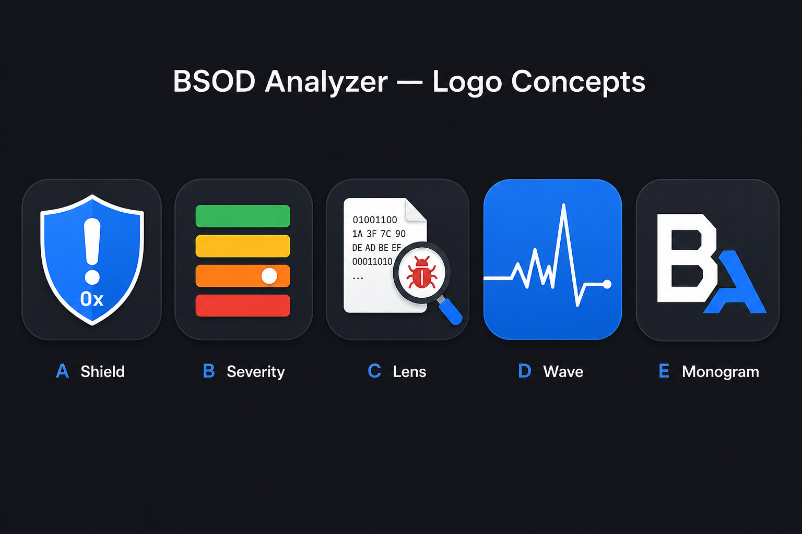
Starting point before themed per-concept boards.
Round 1 — Themed sets (A–D)
A — Diagnostic Shield
trust · utility
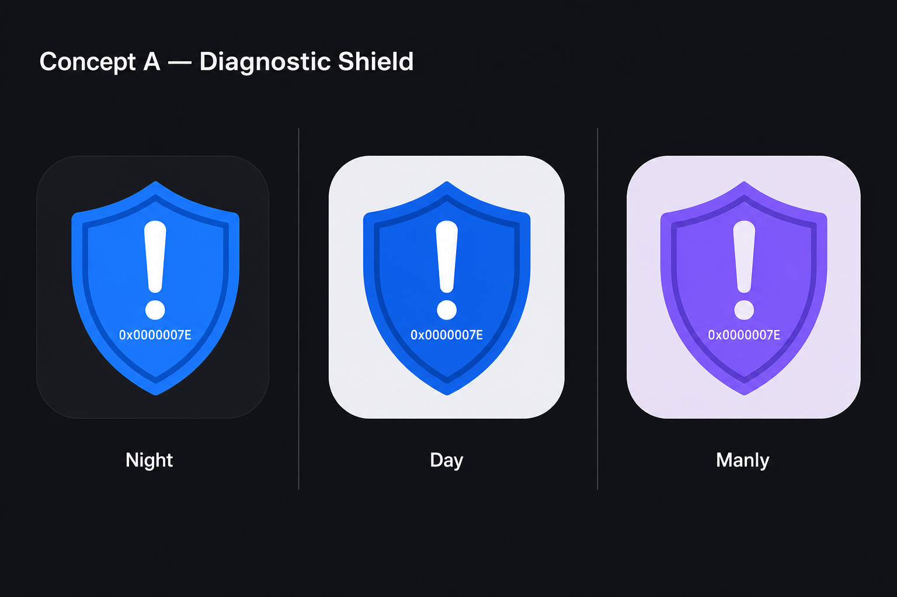
Shield + alert + subtle 0x. Strong support-tool read.
B — Severity Pulse
in-app severity meter
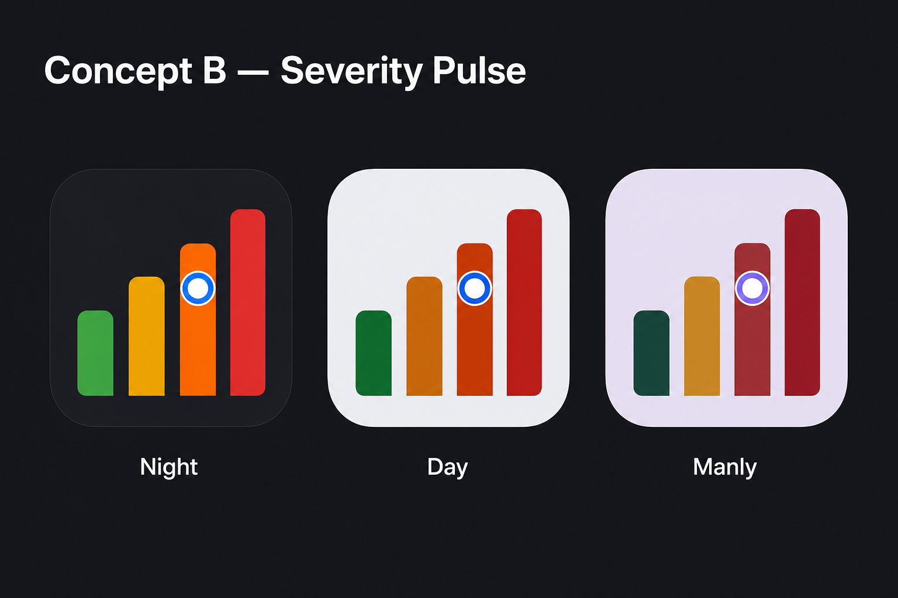
Four-bar meter + marker — unique to BSOD Analyzer.
C — Dump Lens
Preferred
magnifier · hex dump · bug
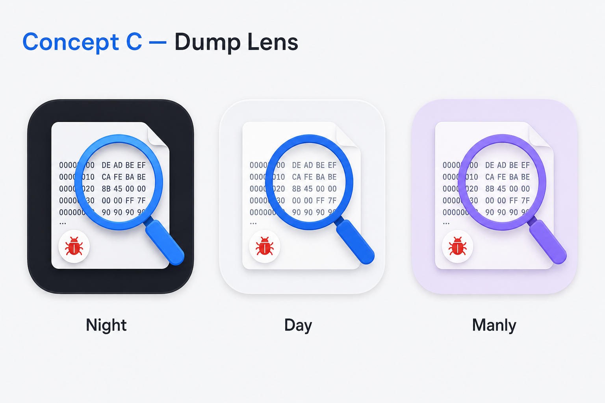
Original forensic direction — felt busy; see C1–C3 alternates below.
D — Crash Wave
EKG spike · timeline
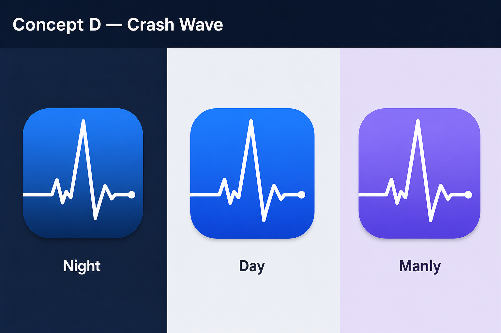
Abstract blue field + crash spike — no Windows BSOD copy.
Round 2 — C alternates
C1 — Clean Lens
minimal · less clutter
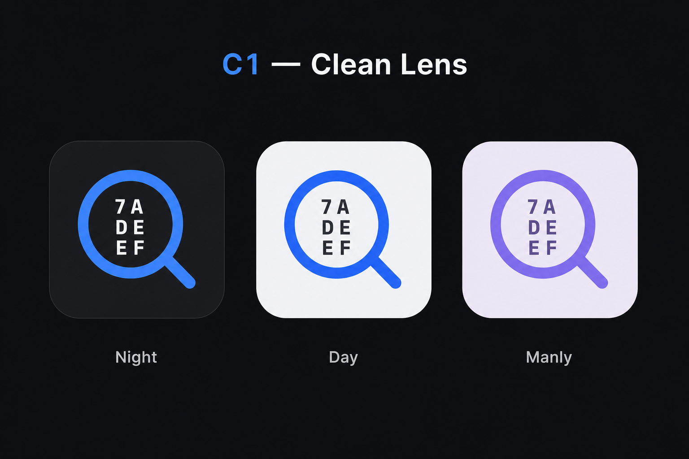
Large lens, tiny hex inside — simplified original C.
C2 — Silicon Lens
chip under glass
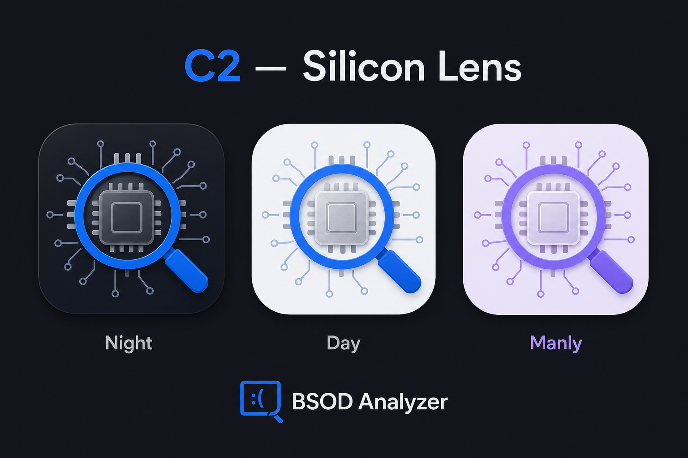
Lens over CPU/memory — ties to drivers & firmware.
C3 — Binary Spotlight
fault byte highlighted
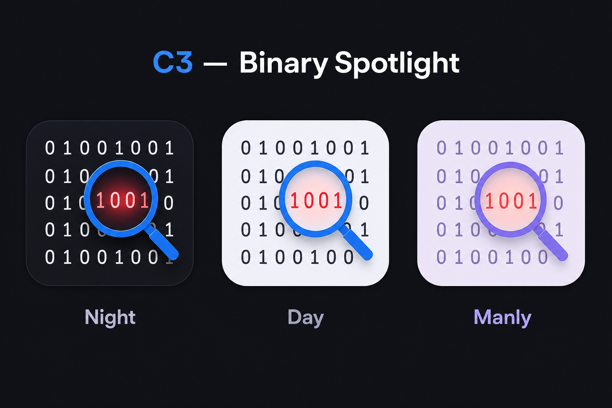
Binary stream + lens on the error — “found it” moment.
C4 — Lens + Chip + Bug
Hybrid pick
C + C2 · bug centered on chip
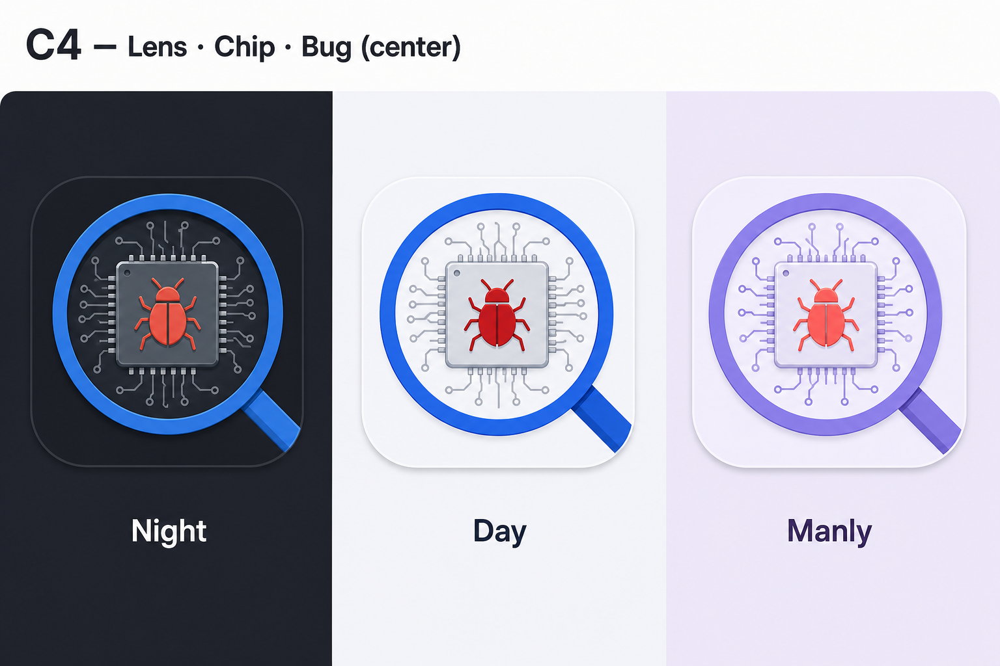
Magnifier over silicon chip with bug centered on die — forensic hardware crash.
Round 2 — New concepts
F — Dump Repair
.dmp + wrench
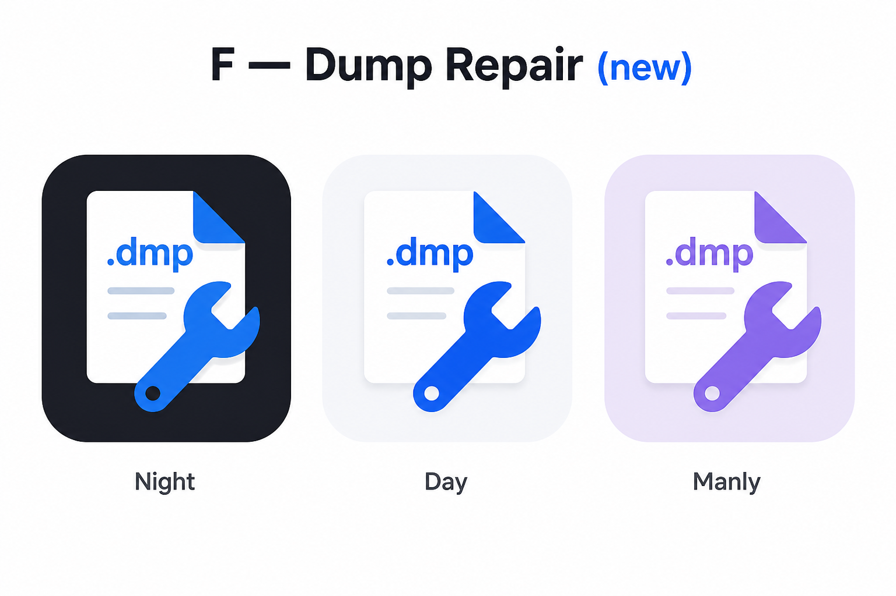
Action-oriented — inspect and fix (action plan / drivers).
G — Stack Pin
call stack · fault layer
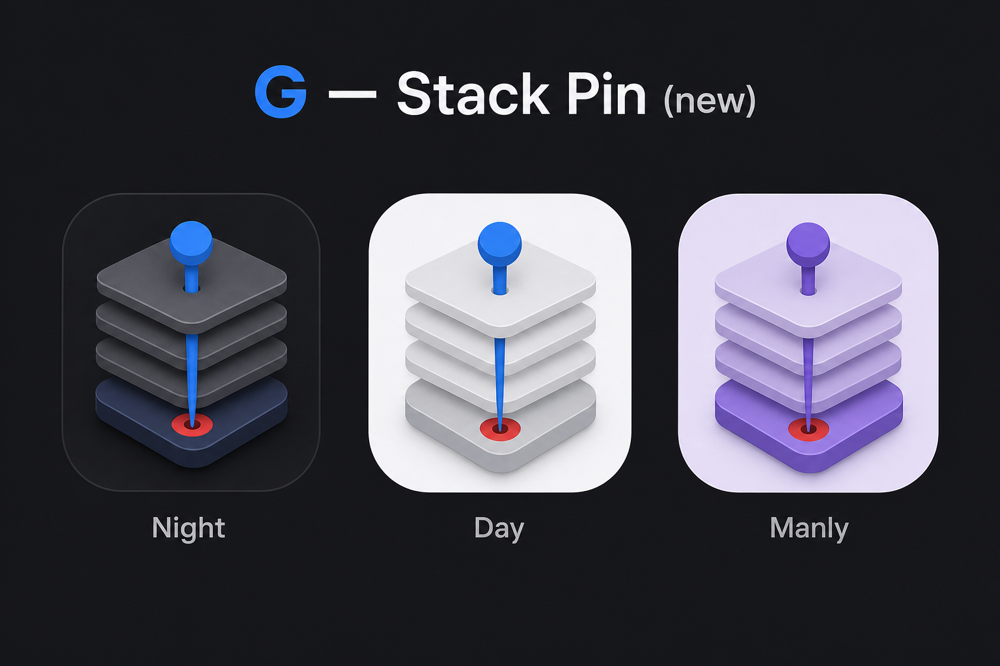
Stack trace metaphor — developer-native, distinct from lens family.